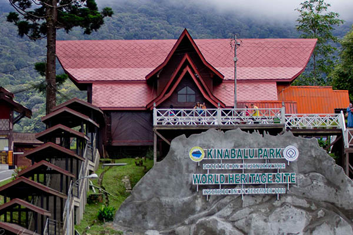
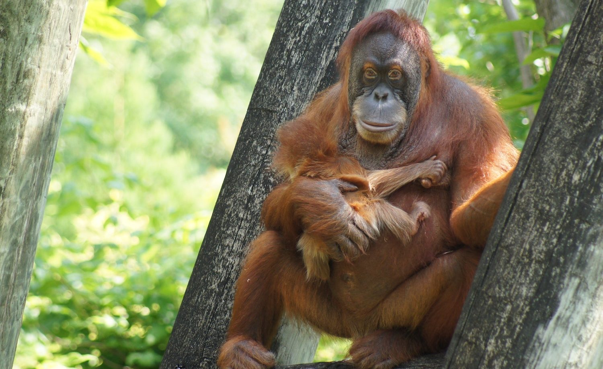
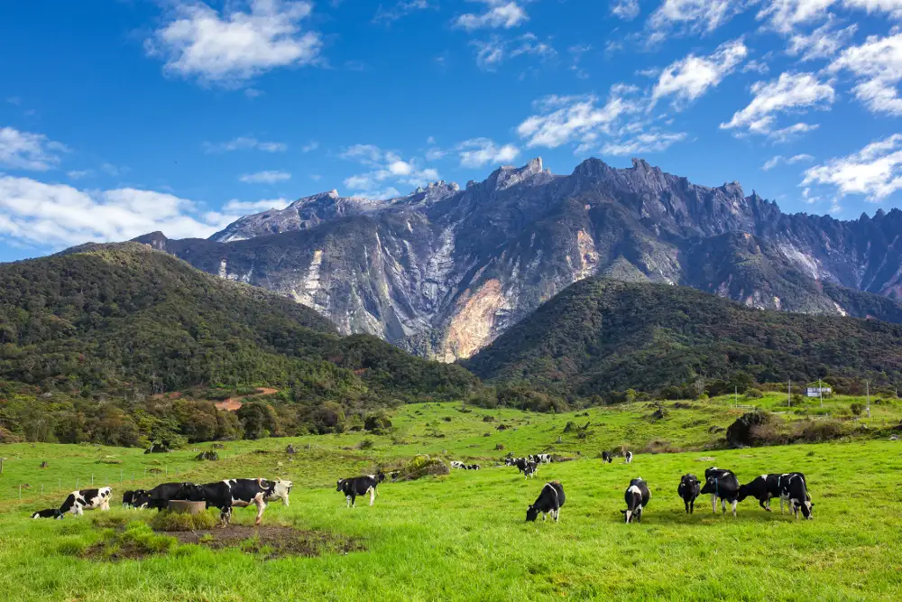

Mount Kinabalu, located in the Kinabalu Park World Heritage Site, is celebrated for its diverse flora and fauna at various altitudes. This mountain in the Crocker Range is globally renowned for its remarkable plant and animal biodiversity, featuring species from the Himalayas, Australasia, and Indo-Malaya. Recent surveys estimate an astonishing 5,000 to 6,000 plant species on the mountain, making it one of the world's most vital ecological sites, surpassing the combined count of Europe and North America (excluding tropical regions of Mexico).
| Adult | : RM 10.00 (Malaysian) | RM 50.00 (Non-Malaysian) | |
| Children | : RM 5.00 (Malaysian) | RM 25.00 (Non-Malaysian) |
Monday ~ Sunday: 9:00 AM - 10:00 PM


Kinabalu Park, established as a World Heritage Site in 1964, encompasses 754 square kilometers in Sabah, Malaysian Borneo. It gained protected status following the Royal Society Kinabalu Scientific expedition of 1962-1964, led by Professor Corner. The park's main highlight is Mount Kinabalu, standing at 4,095.2 meters, the highest peak between the Himalayas and New Guinea. Its slopes are home to a rich variety of plant and animal species, particularly renowned for its diverse plant life influenced by the Himalayas, China, Australia, the Malay Peninsula, and pan-tropical regions.
| Adult | : RM 100.00 (Malaysian) | RM 200.00 (Non-Malaysian) | |
| Children | : RM 50.00 (Malaysian) | RM 80.00 (Non-Malaysian) |
Monday ~ Sunday: 7:00 AM - 5:00 PM

Established in 1964, Sepilok Orangutan Rehabilitation Centre is a world-famous facility located within the Kabili-Sepilok Forest Reserve, about 25 km from Sandakan. It serves as a refuge for injured and orphaned orangutans, offering them survival training before release into the forest. Visitors can witness these amazing creatures during daily feeding times. Besides the orangutan center, Sepilok boasts other attractions such as the Bornean Sun Bear Conservation Centre, Labuk Bay Proboscis Monkey Sanctuary, and the Rainforest Discovery Centre.
| Adult | : RM 5.00 (Malaysian) | RM 30.00 (Non-Malaysian) | |
| Children | : RM 2.00 (Malaysian) | RM 15.00 (Non-Malaysian) |
Monday ~ Sunday: 8:00 AM - 5:00 PM

Sipadan is celebrated as one of the world's premier dive sites, attracting divers for its diverse marine life. This mushroom-shaped island offers 12 unique dive points. Among the highlights is Barracuda Point, where you can witness a mesmerizing swirl of barracuda. Alternatively, The Drop Off is a popular choice, requiring just a 9.14-meter beach walk before plunging into the water and navigating the island wall, which extends 600 meters from the ocean floor.
| Free for all |
Monday ~ Sunday: 24 hours

Tunku Abdul Rahman Park, located 3 kilometers off Kota Kinabalu in Gaya Bay, is Sabah's second national park, established in 1974. This 50-square-kilometer park comprises five islands, their surrounding reefs, and the sea, all dedicated to protecting diverse wildlife and marine ecosystems. Initially covering Gaya and Sapi islands, it expanded in 1979 to include Manukan, Sulug, and Mamutik islands. Each island's name reflects its history and early explorers.
| Adult | : RM 8.00 (Malaysian) | RM 25.00 (Non-Malaysian) | |
| Children | : RM 5.00 (Malaysian) | RM 20.00 (Non-Malaysian) |
Monday ~ Sunday: 8:00 AM - 5:00 PM

Welcome to Danum Valley Conservation Area, a 130-million-year-old rainforest in Malaysian Borneo. This 438-square-kilometer reserve is renowned for its ancient rainforests, featuring some of the tallest trees on Earth. It's a prime spot to encounter iconic Bornean wildlife like Gibbons, Orangutans, Red Leaf Monkeys, and Hornbills in their natural habitat. Explore this lush jungle for an unforgettable wildlife experience.
| Adult | : RM 50.00 (Malaysian) | USD 10 (Non-Malaysian) | |
| Children | : RM 25.00 (Malaysian) | USD 5 (Non-Malaysian) |
Monday ~ Sunday: 8:00 AM - 5:00 PM

The Lok Kawi Wildlife Park, established on February 17, 2007, is situated along the Penampang-Papar old road in Sabah, fully developed by the Sabah Wildlife Department. It comprises two key components: the zoological and botanical sections, with a particular focus on creating a family-friendly environment, especially in the Children's Zoo. Notable residents of the zoo include Borneo Pygmy elephants, Proboscis monkeys, Malayan tigers, and various species of deer.
| Adult | : RM 10.00 (Malaysian) | RM 20.00 (Non-Malaysian) | |
| Children | : RM 5.00 (Malaysian) | RM 10.00 (Non-Malaysian) |
Monday ~ Sunday: 8:00 AM - 5:00 PM

Kundasang, nestled in Malaysian Borneo, has become a sought-after destination for leisure travelers. Situated at the base of Mount Kinabalu, Malaysia's tallest mountain and a UNESCO World Heritage Site, Kundasang offers breathtaking landscapes, rich culture, historical significance, and delicious Malaysian cuisine. This town has carved out its own distinct reputation, drawing thousands of tourists year-round.
| Free for all |
Monday ~ Sunday: 8:30 AM - 8:30 PM

Gomantong Cave, spanning 3,297 hectares in the Kinabatangan district, is managed by the Sabah Wildlife Department. Divided into Simud Hitam and Simud Putih Caves, its entrance reaches a towering 300 feet. To reach Gomantong, you can drive approximately 5 to 6 hours from Kota Kinabalu to Sandakan, followed by a 1.5-hour drive to the caves. Tour operators in Sandakan and Sabah also offer packages for convenient access.
| Adult | : RM 10.00 (Malaysian) | RM 20.00 (Non-Malaysian) | |
| Children | : RM 5.00 (Malaysian) | RM 10.00 (Non-Malaysian) |
Monday ~ Sunday: 8:00 AM - 6:00 PM

Poring Hot Springs is a renowned natural attraction located about 40 kilometers east of Kinabalu Park in Sabah, Malaysia. Nestled amidst a lush lowland forest, it offers visitors the opportunity to unwind in soothing hot sulfur spring baths, walk on a canopy walkway for a unique forest perspective, and witness the world's largest flower, the Rafflesia.
| Adult | : RM 10.00 (Malaysian) | RM 20.00 (Non-Malaysian) | |
| Children | : RM 5.00 (Malaysian) | RM 10.00 (Non-Malaysian) |
Monday ~ Sunday: 8:00 AM - 5:00 PM

Tanjung Aru Beach is a picturesque coastal destination in Kota Kinabalu, Sabah, known for its stunning sunsets. The sandy shores and clear waters make it ideal for leisurely strolls, water sports, and relaxation. The nearby Tanjung Aru Village offers a taste of local cuisine.
| free to access |
The beach is accessible throughout the day, and it's a great spot to catch the sunset.

Desa Cattle Dairy Farm, nestled in the picturesque Kundasang region of Sabah, Malaysia, offers a unique experience in the heart of the countryside. Set against the backdrop of Mount Kinabalu, this dairy farm provides visitors with the opportunity to witness the dairy farming process, interact with cows, and enjoy fresh dairy products amidst stunning natural beauty.
| Adult | : RM 5.00 (Malaysian) | RM 10.00 (Non-Malaysian) | |
| Children | : RM 3.00 (Malaysian) | RM 5.00 (Non-Malaysian) |
Monday ~ Sunday: 8:00 AM - 5:00 PM

Mabul Island is a renowned tropical paradise in Sabah, Malaysia. Located in the Celebes Sea, it is celebrated for its crystal-clear waters, vibrant marine life, and world-class diving opportunities. The island offers pristine beaches, superb snorkeling, and the chance to spot unique underwater species like sea turtles and macro marine life.
| Entrance fees may vary depending on the specific activities or accommodations chosen on the island. |
The island itself is accessible throughout the day, and activities are typically organized by resorts and dive operators.

Tawau Hills Park, situated in the Tawau district of Sabah, Malaysia, offers a serene natural escape. The park features lush rainforests, waterfalls, and pristine rivers. Visitors can explore hiking trails, enjoy picnics by the streams, and discover the rich biodiversity of this protected area.
| Adult | : RM 6.00 (Malaysian) | RM 20.00 (Non-Malaysian) | |
| Children | : RM 5.00 (Malaysian) | RM 12.00 (Non-Malaysian) |
Monday ~ Sunday: 8:00 AM - 5:00 PM

Klias Wetlands, located in Sabah, Malaysia, is a pristine mangrove forest and wetland area. It's a sanctuary for diverse wildlife, including proboscis monkeys, macaques, and various bird species. Visitors can embark on river cruises to witness these creatures in their natural habitat and enjoy stunning sunset views over the wetlands.
| Adult | : RM 50.00 (Malaysian) | RM 80.00 (Non-Malaysian) | |
| Children | : RM 30.00 (Malaysian) | RM 50.00 (Non-Malaysian) |
Monday ~ Sunday: 8:00 AM - 5:00 PM

Mari Mari Cultural Village, located near Kota Kinabalu, Sabah, Malaysia, offers a rich cultural experience. It showcases the diverse indigenous cultures of Sabah through traditional houses, crafts, and performances. Visitors can immerse themselves in the customs and traditions of different tribes, savor local cuisine, and gain insight into the region's heritage.
| Adult | : RM 100.00 (Malaysian) | RM 160.00 (Non-Malaysian) | |
| Children | : RM 90.00 (Malaysian) | RM 140.00 (Non-Malaysian) |
Monday ~ Sunday: 10:00 AM - 5:00 PM

Kota Belud is a charming town in Sabah, Malaysia, known for its vibrant Sunday market, which is one of the biggest in the state. Visitors can explore the market's stalls offering local produce, handicrafts, and traditional foods. The town also boasts picturesque views of Mount Kinabalu and is a gateway to exploring the surrounding natural beauty.
| Kota Belud town itself generally does not have entrance fees, but individual attractions or activities within the town may have their own fees. |
Monday ~ Sunday: 9:00 AM - 4:30 PM

Lankayan Island, situated in the Sulu Sea, is a tranquil tropical paradise in Sabah, Malaysia. It is renowned for its exceptional coral reefs and marine biodiversity, making it a prime destination for divers and nature enthusiasts. With its white sandy beaches and crystal-clear waters, Lankayan Island offers a serene escape for those seeking relaxation and underwater exploration.
| Adult | : RM 60.00 (Malaysian) | RM 90.00 (Non-Malaysian) | |
| Children | : RM 100.00 (Malaysian) | RM 90.00 (Non-Malaysian) |
Monday ~ Sunday: 8:00 AM - 5:00 PM

The Kinabatangan River flows through the heart of Sabah, Malaysia, and is renowned for its rich wildlife and biodiversity. Visitors can embark on river cruises to witness proboscis monkeys, orangutans, pygmy elephants, and various bird species in their natural habitat. Exploring the Kinabatangan River offers a captivating journey through one of Borneo's most remarkable ecosystems.
| Adult | : RM 60.00 (Malaysian) | RM 90.00 (Non-Malaysian) | |
| Children | : RM 100.00 (Malaysian) | RM 90.00 (Non-Malaysian) |
Monday ~ Sunday: 8:00 AM - 5:00 PM

The Mantanani Islands, located off the northwest coast of Sabah, Malaysia, are a hidden gem known for their pristine beaches and vibrant underwater world. These islands offer an idyllic escape for snorkelers and divers, with opportunities to encounter diverse marine life, including sea turtles. The crystal-clear waters and serene atmosphere make Mantanani Islands a perfect tropical getaway.
| There is no entrance fee to the Mantanani Islands. |
The Mantanani Islands are open all year round

The Kota Kinabalu City Mosque, often referred to as the "Floating Mosque," is an iconic religious site in Kota Kinabalu, Sabah, Malaysia. Built partially over a lagoon, this magnificent mosque features stunning Islamic architecture and serene surroundings. Visitors can explore the mosque's interior and admire its intricate design while appreciating the peaceful ambiance of the area.
| RM 5 (for Malaysian & Non-Malaysian) |
The mosque is open to visitors outside of prayer times. It's advisable to visit during non-prayer hours to explore the mosque's interior and surroundings.

Kokol Hill, located near Kota Kinabalu, Sabah, Malaysia, offers panoramic views of the city and surrounding landscapes. This hill station is known for its cool climate and lush greenery, making it a popular spot for relaxation and photography. Visitors can enjoy the serene atmosphere, dine at hilltop restaurants, and capture breathtaking vistas of the region.
| Kokol Hill itself typically doesn't have an entrance fee, but fees may apply for specific activities or restaurants on the hill. |
Visitors can access Kokol Hill throughout the day, and it's particularly popular for sunset views.

Pulau Tiga National Park, also known as the "Survivor Island" due to its role in the reality TV show, is a natural paradise located off the coast of Sabah, Malaysia. This pristine island park offers opportunities for hiking, snorkeling, and rejuvenating in natural mud volcanoes. With diverse marine life and lush landscapes, it's an ideal destination for eco-adventurers.
| Adult | : RM 10.00 (Malaysian) | RM 20.00 (Non-Malaysian) | |
| Children | : RM 5.00 (Malaysian) | RM 10.00 (Non-Malaysian) |
Monday ~ Sunday: 9:00 AM - 5:00 PM

The Tenom Agricultural Park, situated in the interior of Sabah, Malaysia, is a haven for nature enthusiasts and agricultural enthusiasts alike. It features lush landscapes, botanical gardens, and educational facilities. Visitors can explore various plantations, learn about tropical agriculture, and enjoy the scenic beauty of the region.
| Adult | : RM 10.00 (Malaysian) | RM 20.00 (Non-Malaysian) | |
| Children | : RM 5.00 (Malaysian) | RM 10.00 (Non-Malaysian) |
Monday ~ Sunday: 8:00 AM - 5:00 PM

Bako National Park, located on the island of Borneo in Sarawak, Malaysia, is a biodiverse haven known for its unique limestone formations, rainforest trails, and diverse wildlife. Visitors can explore various ecosystems, spot proboscis monkeys, and enjoy the picturesque coastline.
| Adult | : RM 30.00 (Malaysian) | RM 50.00 (Non-Malaysian) | |
| Children | : RM 15.00 (Malaysian) | RM 25.00 (Non-Malaysian) |
Monday ~ Sunday: 8:00 AM - 5:00 PM

Gunung Mulu National Park, a UNESCO World Heritage Site in Sarawak, Malaysia, is renowned for its extraordinary karst formations and cave systems. It's a paradise for spelunkers and nature enthusiasts, offering guided cave tours and pristine rainforest hikes. The park is home to the world's largest cave chamber and a wealth of unique flora and fauna.
| Adult | : RM 50.00 (Malaysian) | RM 100.00 (Non-Malaysian) | |
| Children | : RM 25.00 (Malaysian) | RM 50.00 (Non-Malaysian) |
Monday ~ Sunday: 8:00 AM - 5:00 PM

The Semenggoh Wildlife Centre, located near Kuching in Sarawak, Malaysia, is a sanctuary for orangutans and other endangered wildlife. It offers a unique opportunity to observe these remarkable creatures in a semi-wild environment. Visitors can witness orangutans during feeding times and learn about conservation efforts in the region.
| Adult | : RM 10.00 (Malaysian) | RM 20.00 (Non-Malaysian) | |
| Children | : RM 5.00 (Malaysian) | RM 10.00 (Non-Malaysian) |
Monday ~ Sunday: 8:00 AM - 4:00 PM

Sarawak Cultural Village, situated in the foothills of Mount Santubong, Sarawak, Malaysia, is a living museum celebrating the state's diverse indigenous cultures. Visitors can explore traditional longhouses, watch cultural performances, and engage with the local communities. It's an immersive experience into the rich heritage of Sarawak.
| Adult | : RM 50.00 (Malaysian) | RM 75.00 (Non-Malaysian) | |
| Children | : RM 25.00 (Malaysian) | RM 37.50 (Non-Malaysian) |
Monday ~ Sunday: 9:00 AM - 6:00 PM

The Niah Caves, located in Niah National Park, Sarawak, Malaysia, are famous for their archaeological significance and stunning limestone formations. Visitors can explore cave chambers, view ancient cave paintings, and marvel at the unique cave ecosystem. It's a captivating destination for history buffs and nature enthusiasts.
| Adult | : RM 50.00 (Malaysian) | RM 100.00 (Non-Malaysian) | |
| Children | : RM 25.00 (Malaysian) | RM 50.00 (Non-Malaysian) |
Monday ~ Sunday: 9:00 AM - 6:00 PM

The Matang Wildlife Centre, located in Kubah National Park, Sarawak, Malaysia, is dedicated to the rescue and rehabilitation of wildlife, including orangutans and hornbills. Visitors can learn about conservation efforts, observe rehabilitated animals, and explore lush rainforest trails. It's an educational and eco-friendly destination.
| Adult | : RM 10.00 (Malaysian) | RM 20.00 (Non-Malaysian) | |
| Children | : RM 5.00 (Malaysian) | RM 10.00 (Non-Malaysian) |
Monday ~ Sunday: 9:00 AM - 5:00 PM

The Sarawak River Cruise offers a scenic and leisurely boat ride along the Sarawak River in Kuching, Sarawak, Malaysia. It provides visitors with stunning views of the city's waterfront, historical landmarks, and vibrant riverbanks. The cruise is a relaxing way to experience the charm of Kuching from a unique perspective.
| There is no entrance fee to the Sarawak River Cruise |
Monday ~ Sunday: 5:30 PM - 7:00 PM

Lambir Hills National Park, located in the Miri Division of Sarawak, Malaysia, is a tropical rainforest haven teeming with biodiversity. It offers hiking trails leading to picturesque waterfalls and vibrant wildlife. Visitors can explore the lush greenery, cool off in clear streams, and witness the wonders of Sarawak's rainforests.
| Adult | : RM 30.00 (Malaysian) | RM 50.00 (Non-Malaysian) | |
| Children | : RM 15.00 (Malaysian) | RM 25.00 (Non-Malaysian) |
Monday ~ Sunday: 8:00 AM - 5:00 PM

Kubah National Park, located in Sarawak, Malaysia, is a biodiversity hotspot known for its lush rainforests and diverse wildlife. It features an extensive network of trails leading to waterfalls, natural pools, and panoramic viewpoints. Visitors can explore the rich flora and fauna, making it a paradise for nature enthusiasts.
| Adult | : RM 10.00 (Malaysian) | RM 20.00 (Non-Malaysian) | |
| Children | : RM 3.00 (Malaysian) | RM 7.00 (Non-Malaysian) |
Monday ~ Sunday: 8:00 AM - 5:00 PM

The Sarawak State Museum, situated in Kuching, Sarawak, Malaysia, is a treasure trove of Sarawak's history and culture. It houses an extensive collection of artifacts, ethnographic displays, and natural history exhibits. Visitors can delve into the rich heritage and diverse traditions of Sarawak.
| Adult | : RM 20.00 (Malaysian) | RM 50.00 (Non-Malaysian) | |
| Children | : RM 5.00 (Malaysian) | RM 10.00 (Non-Malaysian) |
Monday ~ Sunday: 9:30 AM - 4:45 PM

Sarawak Orchid Garden, nestled in Kuching, Sarawak, Malaysia, is a botanical paradise for orchid enthusiasts. It boasts a stunning collection of vibrant orchid species in a lush garden setting. Visitors can admire the exotic blooms and immerse themselves in the beauty of these delicate flowers.
| Adult | : RM 10.00 (Malaysian) | RM 20.00 (Non-Malaysian) | |
| Children | : RM 5.00 (Malaysian) | RM 10.00 (Non-Malaysian) |
Monday ~ Sunday: 9:00 AM - 4:45 PM

Kubah Ria National Park, located near Kuching in Sarawak, Malaysia, is a pristine rainforest reserve teeming with biodiversity. It offers hiking trails through lush greenery, leading to refreshing waterfalls. Visitors can explore the natural beauty, spot wildlife, and unwind in a serene environment.
| Adult | : RM 7.00 (Malaysian) | RM 20.00 (Non-Malaysian) | |
| Children | : RM 3.00 (Malaysian) | RM 10.00 (Non-Malaysian) |
Monday ~ Sunday: 8:00 AM - 4:00 PM

Fort Margherita, located in Kuching, Sarawak, Malaysia, is a historical landmark built during the Brooke era. It showcases colonial architecture and offers insights into Sarawak's history. Visitors can explore the fort's exhibits, cannons, and scenic river views.
| Adult | : RM 10.00 (Malaysian) | RM 20.00 (Non-Malaysian) | |
| Children | : Free (Malaysian) | RM 7.00 (Non-Malaysian) |
Monday ~ Sunday: 9:00 AM - 4:45 PM

The Sarawak Pepper Farm, located in Sarawak, Malaysia, is renowned for producing high-quality black and white pepper. Visitors can explore the pepper plantations, learn about the pepper cultivation process, and purchase authentic Sarawak pepper products. It's a flavorful experience for spice enthusiasts.
| Free to access |
Monday ~ Sunday: 9:00 AM - 4:45 PM

Sematan Beach, located in Sarawak, Malaysia, is a tranquil coastal paradise offering pristine sands and clear waters. It's an ideal destination for beach lovers and those seeking a relaxing getaway. Visitors can bask in the sun, take leisurely walks along the shore, and enjoy the serene ambiance.
| Free to access |
24 hours

Similajau National Park, situated in Sarawak, Malaysia, is a coastal and rainforest reserve known for its diverse ecosystems. It offers hiking trails, beautiful beaches, and the chance to spot wildlife such as proboscis monkeys and crocodiles. Visitors can explore nature's wonders and experience the park's unique biodiversity.
| Adult | : RM 25.00 (Malaysian) | RM 50.00 (Non-Malaysian) | |
| Children | : RM12.50 (Malaysian) | RM 25.00 (Non-Malaysian) |
Monday ~ Sunday: 8:00 AM - 5:00 PM

Kuching Waterfront, located along the Sarawak River in Kuching, Malaysia, is a vibrant promenade offering scenic views, historical landmarks, and cultural attractions. It's a popular gathering place for both locals and tourists, featuring restaurants, shops, and evening performances. Visitors can enjoy a leisurely stroll and soak in the city's atmosphere.
| There is no entrance fee to the Kuching Waterfront |
24 hours

Fairy Caves, located near Kuching in Sarawak, Malaysia, are a mystical cave complex with towering chambers and striking rock formations. Visitors can explore the caves' interior, witness the natural beauty, and climb to a viewpoint for panoramic vistas of the surrounding rainforest. It's a unique adventure for cave enthusiasts.
| Adult | : RM 20.00 (Malaysian) | RM 30.00 (Non-Malaysian) | |
| Children | : RM 10.00 (Malaysian) | RM 15.00 (Non-Malaysian) |
Monday ~ Sunday: 8:00 AM - 5:00 PM

Lundu Beach, located in Sarawak, Malaysia, is a picturesque coastal destination offering sandy shores and serene waters. It's an excellent spot for beachcombing, picnicking, and relaxation. Visitors can enjoy the peaceful ambiance and scenic beauty of this coastal retreat.
| There is no entrance fee to Lundu Beach |
24 hours

The Sarawak Chamber is part of the Mulu Caves system in Sarawak, Malaysia, and is one of the world's largest cave chambers. It is a natural wonder that attracts cave explorers and enthusiasts. Visitors can embark on cave tours to witness the awe-inspiring scale of this subterranean chamber.
| Adult | : RM 50.00 (Malaysian) | RM 100.00 (Non-Malaysian) | |
| Children | : RM 25.00 (Malaysian) | RM 50.00 (Non-Malaysian) |
Monday ~ Sunday: 9:00 AM - 5:00 PM

The Kuching Cat Museum is a museum dedicated to cats. It houses a collection of over 4,000 cat-related items, including sculptures, paintings, photographs, and artifacts. The museum also has a library and a gift shop.
| There is no entrance fee |
Monday ~ Sunday: 9:00 AM - 5:00 PM

The Sarawak Islamic Museum, situated in Kuching, Sarawak, offers insights into the rich Islamic heritage and culture of Sarawak. Visitors can explore Islamic art, artifacts, and historical exhibits, providing a deeper understanding of the region's Islamic traditions.
| There is no entrance fee |
Monday ~ Sunday: 9:00 AM - 4:45 PM

The Sarawak Timber Museum, located in Sarawak, Malaysia, showcases the history and significance of the timber industry in the region. Visitors can explore timber-related exhibits, equipment, and learn about the role of timber in Sarawak's development.
| Adult | : RM 10.00 (Malaysian) | RM 20.00 (Non-Malaysian) | |
| Children | : RM 5.00 (Malaysian) | RM 10.00 (Non-Malaysian) |
Monday ~ Sunday: 8:00 AM - 5:00 PM

Talang-Satang National Park, situated in Sarawak, Malaysia, is a marine protected area encompassing several islands. It is known for its conservation efforts related to sea turtles. Visitors can experience the park's pristine beaches, diverse marine life, and participate in sea turtle conservation activities.
| Adult | : RM 25.00 (Malaysian) | RM 50.00 (Non-Malaysian) | |
| Children | : RM 12.50 (Malaysian) | RM 25.00 (Non-Malaysian) |
Monday ~ Sunday: 8:00 AM - 5:00 PM

Tanjung Datu National Park, situated in Sarawak, Malaysia, is a pristine coastal and rainforest reserve. It boasts untouched beaches, diverse flora and fauna, and lush jungles. Visitors can explore the park's natural beauty, go trekking through the rainforest, and enjoy serene beachfronts. It is a haven for nature lovers seeking tranquility and biodiversity.
| Adult | : RM 50.00 (Malaysian) | RM 60.00 (Non-Malaysian) | |
| Children | : RM 25.00 (Malaysian) | RM 30.00 (Non-Malaysian) |
Monday ~ Sunday: 8:00 AM - 5:00 PM